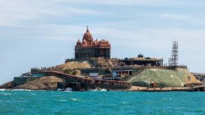
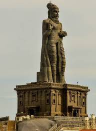
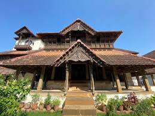

Kanniyakumari, located at the southern tip of India, is a beautiful town known for its scenic beaches, monuments, and religious sites.
This famous rock island monument was built in honor of Swami Vivekananda. It offers panoramic views of the ocean where the Bay of Bengal, Arabian Sea, and Indian Ocean meet.
This massive 133-foot tall stone statue stands beside Vivekananda Rock. It represents the Tamil poet and philosopher Thiruvalluvar.
Located near Kanniyakumari, this wooden palace is a stunning example of traditional Kerala architecture and craftsmanship.
Famous for sunrise and sunset views, Kanyakumari Beach is where the three seas meet. It's a peaceful place for tourists and photographers.

Kanniyakumari